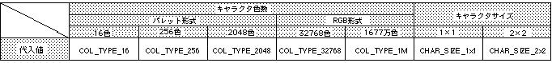

Return to previous page | Return to menu | Go to next page
void
Scroll function
Set RBG character controls
void slCharRbg0(col_type , chara_size)
Uint16 col_type ;
Uint16 chara_size ;
col_type Uint16 type numerical value (0 to 4) corresponding to the number of scroll colors chara_size Uint16 type numeric value corresponding to the character size specification (0 to 1)
Set the character size of the rotary scroll “RBG0” and the number of colors used for scrolling.
Refer to the table below for the values assigned to the parameters.
None
If the color RAM mode is 0 or 2, 2048 colors will be 1024 colors.

Note 1) When color RAM mode is 0 or 2, 2048 colors will be 1024 colors.
Note 2) The values in the above table are defined in “sl_def.h” included with the system.
Reference: Chapter 8 Scroll
slCharRbg0